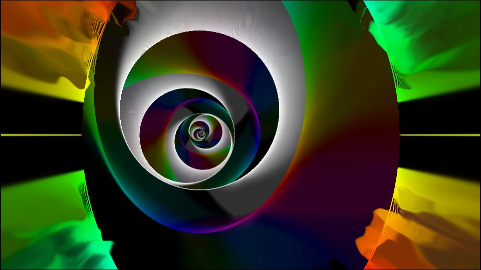
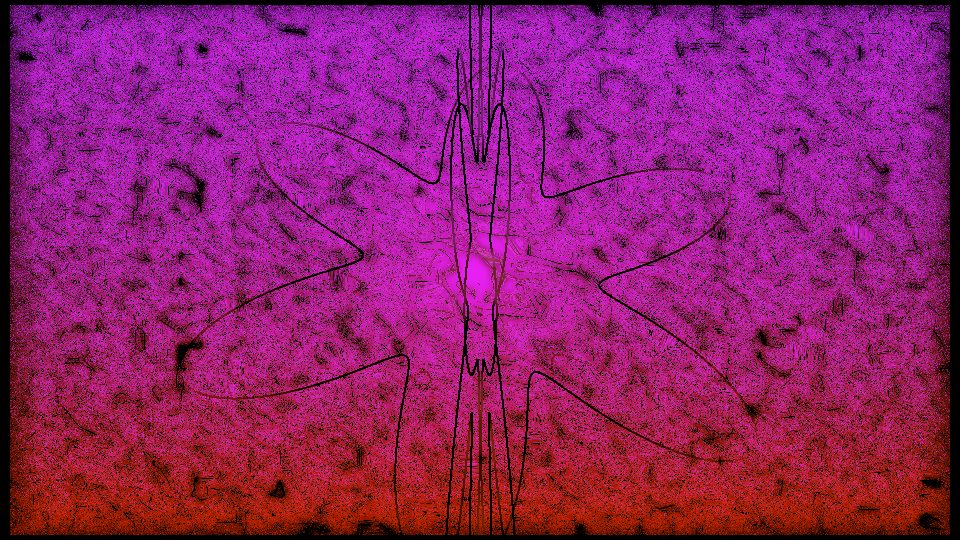
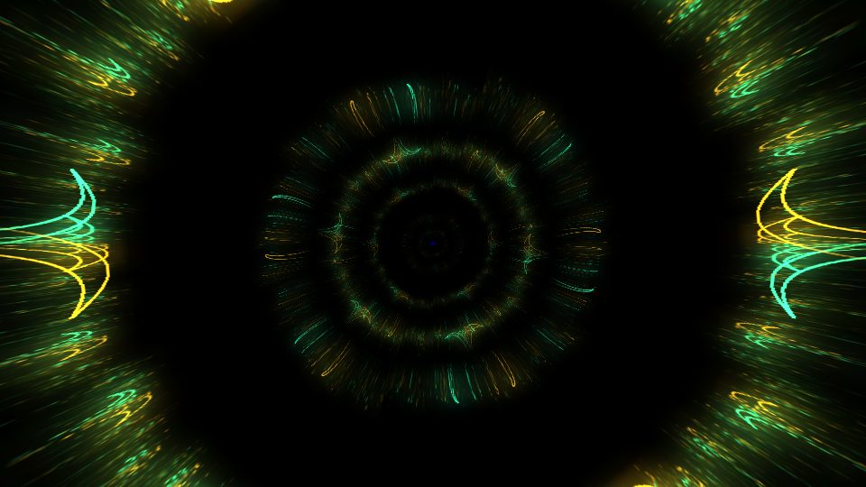

VERSO
VERSOLive visuals, free for everyone.
Verso is VJ software for live shows, clubs, theatre and installations. Launch clips on a grid of layers and columns, stack GPU effects, play MilkDrop presets to the music and send the result to projectors, LED walls or NDI. No licence, no watermark, no account.
Windows 10/11 · macOS 11+ (Apple Silicon and Intel) · Linux x86_64 (Fedora, Ubuntu, Debian…)

Why Verso
Commercial VJ software is powerful and expensive. Verso keeps the workflow VJs already know and removes the barrier to entry, so anyone can learn, practise and perform.
Learn without a licence
Every feature, on every machine, forever. Ideal for students, schools, workshops, collectives and anyone trying VJing for the first time.
The clip-grid workflow
Layers × columns, blend modes, A/B crossfader, effect chains. What you learn in Verso carries over to the professional tools, and back.
Works with your gear
Answers the /composition/… OSC scheme of common VJ software, so existing TouchOSC layouts and controller templates drive it. Plays HAP, DXV3 and ProRes. Imports Advanced Output presets.
Windows, macOS and Linux
One native GPU engine (Rust and wgpu) on all three systems, including Linux, where real VJ tools are rare.
Everything for a show
Verso is young, but already covers a full performance, from the first clip to the projector.
Clip grid
Trigger clips and whole columns with the mouse, keys 1–9, MIDI or OSC. Layer groups, solo, bypass, transitions.
GPU compositing
Seven blend modes (Add, Screen, Multiply, Difference…), opacity per layer, group and master, A/B crossfader.
Video and images
Any codec FFmpeg reads: H.264, H.265, HAP, Resolume DXV3, ProRes. Drop files straight from your file manager.
Native MilkDrop
147 audio-reactive preset families included, with MilkDrop blending between presets and a video input from another layer.
Effects and shaders
WGSL and ISF effects on clips, layers, groups and the composition. Search and import shaders from ISF and ShaderToy in the app.
Advanced Output
Screens and slices, polygon masks, corner pin and warp grids, soft edge blending, test patterns. One window per display, or NDI.
Cue list
Record looks, then Space to Go: clips crossfade, faders glide, cues follow on after seconds or beats.
Control
MIDI learn, OSC in, audio analysis, tap tempo, LFO and audio modulation on any fader or effect parameter.
Lua scripts
Sandboxed automations saved with the composition: react to every frame or every beat.
Agent control (MCP)
An optional local Model Context Protocol server lets an AI agent read and drive the composition and capture rendered frames.
MilkDrop, built in
A native port of the MilkDrop engine runs inside the clip grid, reacting to the audio input. Mix presets like any other clip, put effects on them, feed a video layer into them.



Images rendered by Verso. Presets from the Cream of the Crop collection, credited in the app.
Download
All packages are on the latest release page, with SHA-256 checksums. Installation details are in the guide.
Windows x64
- Portable
.zip: unzip, runverso.exe - FFmpeg included
- Windows 10 or 11, DirectX 12 or Vulkan GPU
macOS universal
.dmgwithVerso.app, Apple Silicon and Intel- FFmpeg via
brew install ffmpeg - macOS 11 Big Sur or later
Linux x86_64
.rpm(Fedora),.deb(Ubuntu, Debian)- Portable
.tar.gzwith FFmpeg included - Vulkan driver, X11 or Wayland
Prefer to build it yourself? cargo run --release -p verso-app from a clone of the repository.